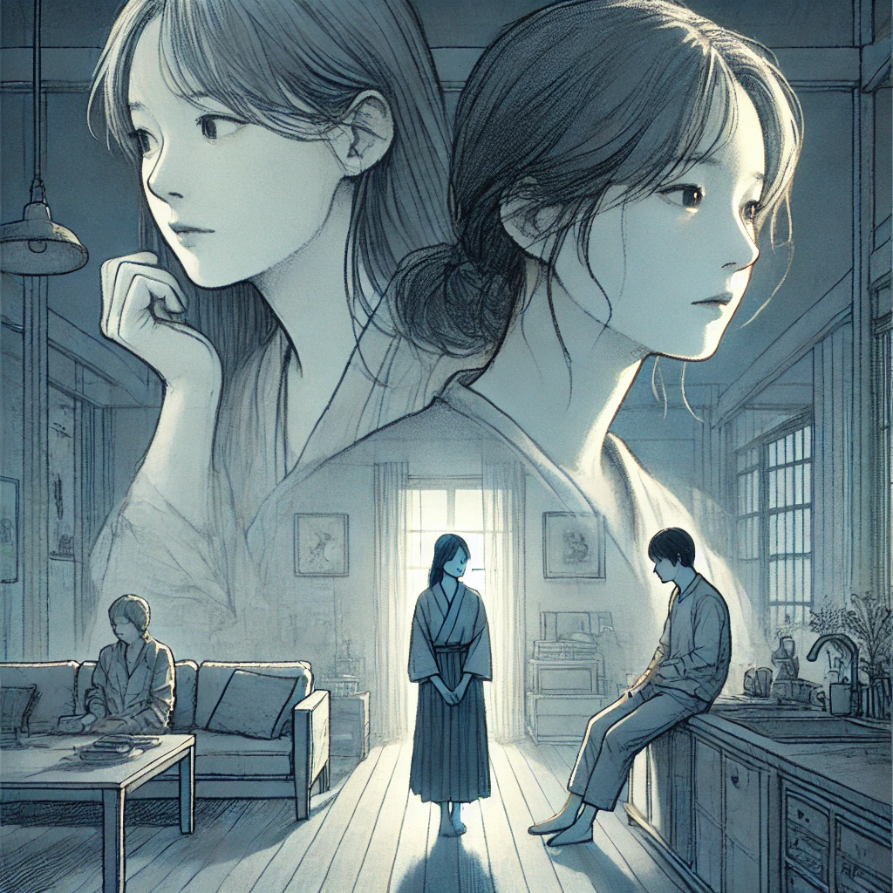

작가: 아시자와 요
출판일: 2023.07.17
감상평:
추리소설이지만 속임수와 결말보다는 인물 간의 관계가 인상적인 작품이었다. 사에와 나쓰코 두 시점에서 전개되는데 두 사람의 알 수 없는 거리감과 불안, 불편이 잔잔하게 느껴진다. 이외에도 나쓰코와 그녀의 딸, 사에와 남편의 관계에서 그 관계가 가깝다고 좋기만 한 것은 아니라는 생각을 했다. 특히 나쓰코에게는 사랑과 보호였지만 딸은 사랑이 어느 순간부터 억압이 되어버린 것 같아 씁쓸했다. 거리감은 부정적인 의미로 자주 쓰이지만 읽고 난 후에는 그 거리감이 나와 너를 보호하는 완충지대이고 무슨 관계든 간에 필요하다고 생각했다.
감상평에 대한 그림: 
감상평에 대한 AI 평가:
이 감상문은 단순한 추리소설이 아니라 인물 간의 미묘한 거리감과 관계의 복잡성에 집중하며 깊이 있는 감상을 담고 있습니다. 거리감이 단순히 부정적인 것이 아니라 관계를 보호하는 완충지대가 될 수 있다는 깨달음에서 성찰적인 시선이 느껴집니다. 사랑과 억압의 경계를 고민하며 인간관계의 본질을 탐구하는 섬세한 감정이 드러납니다.